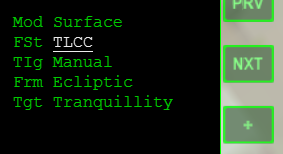
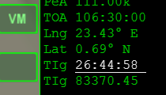
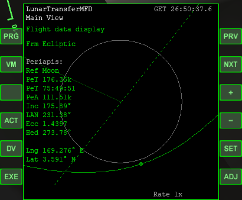
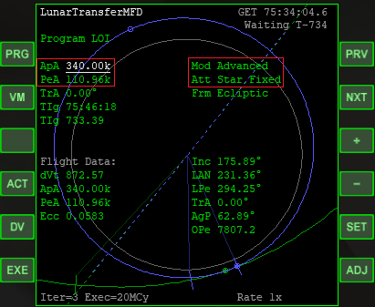
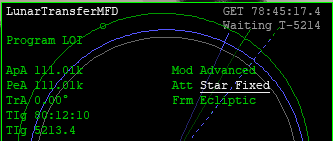

AMSO アポロ11号チュートリアル Part2 （軌道修正とLOI）
ドッキング
GET 03:15:23になったら、CSM（司令機械船）をロケットから分離する。
CSMをLM（月着陸船）とドッキングして、ロケットから切り離す。
この手順については、以下の記事を参照してください。
AMSO ドッキングとTLI
軌道修正
ドッキングと分離が終わったら、LunarTransferMFDに戻る。
Fst (Flight stage)を選択して、+をクリック。
TLIからTLCC(CC=Course correction)に切り替える。

TIgを選択して、26:44:58と入力する。

EXEをクリック。
DVをクリックしてもう一度EXEをクリック。
自動で噴射が実行されるので、タイムワープで放置する。
重要：ここから先の操作は、史実通りの時刻に実行できることはほとんどありません。
噴射のタイミングを自分で判断する必要があります。
Flight monitor
LunarTransferMFDでPRGをクリック。
Program menuを開く。
Flight monitorを選択してSETをクリック。
月に最接近したときの情報が表示される。
VMをクリックすると、月最接近時、月フライバイ、地球最接近時※の予測軌道に表示が切り替わる。
※月で周回軌道に入らず、そのまま減速スイングバイした時の軌道

LOI（月周回軌道投入）
PeTが1000秒を切るまで、タイムワープで時間経過させる。
PeAが111km、ApAが314kmになるように軌道投入する。※
※169.7海里≒314km（参照：Apollo 11 Lunar Orbit Phase）
Program LOI
LunarTransferMFDでProgram menuを開く。
Program LOIを選択してSETをクリック。
データを入力する
PRVorNXTで項目を選択。
+or-で変更する。
Mod(Mode)をAdvanvedにする。
Att(Attitude)をStar Fixedにする。
ApAを選択してSETをクリック。
340kと入力してキーボードでEnterを押す。

LOIを実行する
データを入力したら、EXEをクリック。
DVをクリックしてからもう一度EXEをクリック。
自動噴射が終了するのを待つ。
二度目の軌道投入
もう一度エンジンを噴射して、完全な円軌道にする。
いったんPRGをクリックして、Flight monitorを開く。
PeA・ApAを確認する。
PRGをクリックして、Program LOIに戻る。
ModをAdvanvedにする。
AttをStar Fixedにする。
ApAをPeAと同じ数字にして、もう一度エンジンを噴射する。（史実ではGET 80:11:36に実行）
